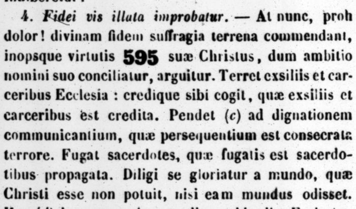

“Terret exsiliis et carceribus Ecclesia” (§§ 3–4, cols. 611–612)
Latin: Migne, PL 10, cols. 611–612, scan n307. Migne’s note letters omitted. Highlighted: the protest Lecky has in mind.

[§ 3] … And was it by the king’s edicts that Paul, when he was himself made a spectacle in the theatre, gathered a Church for Christ? Was he protected, I suppose, by the patronage of Nero, or Vespasian, or Decius? …
4. Force applied to faith is condemned. — But now, alas, earthly votes commend the divine faith, and Christ is accused of lacking power of his own, while ambition is enlisted for his name. The Church frightens men with exile and prison, and forces belief in herself, she who was believed in through exile and prison. She hangs on the favour of those who communicate with her, she who was consecrated by the terror of her persecutors. She drives out priests, she who was spread by priests driven out. She boasts that she is loved by the world, she who could not have been Christ’s if the world had not hated her.
Translation: this edition’s draft. The italic heading is the editor’s summary printed in Migne.
Original Latin
[§ 3, OCR] … edictisque regis Paulus, cum in theatro spectaculum ipse esset, Christo Ecclesiam congregabat? Nerone se, credo, aut Vespasiano, aut Decio patrocinantibus tuebatur? …
4. Fidei vis illata improbatur. — At nunc, proh dolor! divinam fidem suffragia terrena commendant, inopsque virtutis suæ Christus, dum ambitio nomini suo conciliatur, arguitur. Terret exsiliis et carceribus Ecclesia: credique sibi cogit, quæ exsiliis et carceribus est credita. Pendet ad dignationem communicantium, quæ persequentium est consecrata terrore. Fugat sacerdotes, quæ fugatis est sacerdotibus propagata. Diligi se gloriatur a mundo, quæ Christi esse non potuit, nisi eam mundus odisset.
Lecky (vol. II, ch. IV, text at note 9) pairs Hilary with Tertullian as the champions of toleration “during the Arian persecution”, and then traces how later Fathers, once the Church was in power, came to defend coercion; see Augustine on coercion.
Further down the rabbit hole
Sources that Lecky cites in the notes next to the ones that cite this page.
- Simancas, De Catholicis InstitutionibusAn inquisitor’s handbook: no faith with heretics, and torture
- Milman, The History of ChristianityDid Constantine ban the pagan sacrifices? A dean weighs Eusebius against Constantine
- Palmer, A Treatise on the Church of Christ“Whosoever is separated from the Catholic Church … will not have life”
- Paramo, De origine et progressu officii sanctae inquisitionisWhy the dead are tried for heresy
- Tertullian, ApologeticumWhat Lecky leaves out of Tertullian on fear
- Bayle, Commentaire philosophiqueBayle answers the Mosaic law objection to toleration


Backlinks
Every place in Rationalism in Europe that links to this page (generated automatically when the site is built).
- Chapter IV, Part II: note 9